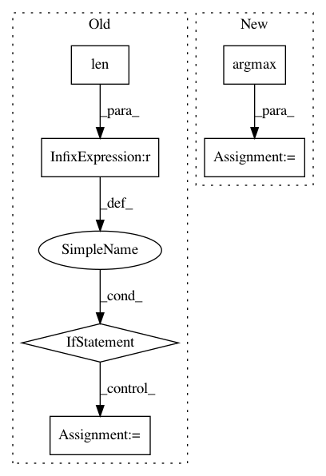

e839626c28d8dc6030ce71f3619e934b36fb6627,catalyst/metrics/functional.py,,process_multiclass_components,#,33
Before Change
"expected 1D or 2D with size 1 in the second dim"
)
if targets.max() != len(torch.unique(targets)) - 1:
if raise_class_labels_mismatch:
raise Exception(
"`targets` maximum does not represent number of classes"
)
// mapping classes
outputs, targets = map_labels_to_classes(outputs, targets)
return outputs, targets
def process_multilabel_components(
After Change
num_classes = max(
outputs.shape[argmax_dim], int(targets.max().detach().item() + 1)
)
outputs = torch.argmax(outputs, dim=argmax_dim)
if num_classes is None:
// as far as we expect the outputs/targets tensors to be int64
// we could find number of classes as max available number
num_classes = max(
int(outputs.max().detach().item() + 1),
int(targets.max().detach().item() + 1),
)
if outputs.dim() == 1:
outputs = outputs.view(-1, 1)
else:
In pattern: SUPERPATTERN
Frequency: 3
Non-data size: 6
Instances
Project Name: Scitator/catalyst
Commit Name: e839626c28d8dc6030ce71f3619e934b36fb6627
Time: 2020-10-23
Author: Balaganskij.NN@phystech.edu
File Name: catalyst/metrics/functional.py
Class Name:
Method Name: process_multiclass_components
Project Name: ufal/npfl114
Commit Name: 65869e202012462ad86ccd71e841bdf3f406e685
Time: 2019-03-20
Author: milan@strakovi.com
File Name: labs/02/gym_cartpole_evaluate.py
Class Name:
Method Name:
Project Name: crista/exercises-in-programming-style
Commit Name: a18c4c6980f01abb4cde534d3bc4289b3f868807
Time: 2019-11-26
Author: crista@tagide.com
File Name: 36-dnn/normalize-chars.py
Class Name:
Method Name: decode_one_hot